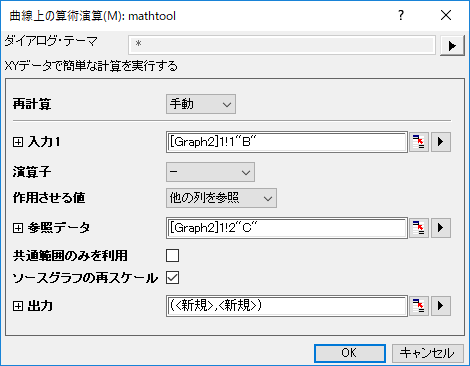

FAQ-961 2つの曲線の差や合計はどのように求めればよいでしょうか・
最終更新: 2018/06/28
- 2つの曲線を持つグラフをアクティブにして、解析: 数学: 曲線上の算術演算を選択し、曲線上の算術演算ダイアログを開きます。
- 1つのグラフをInput1として選択し、演算子に-または+を選択し、作用させる値に他の列を参照を、参照データを選択します。
- 
- 出力には、<入力>: 新しい XYを入力します。OK をクリックして実行します。
Keywords:差, 合計, プロットの差, プロットを追加する, 曲線にフィットさせる